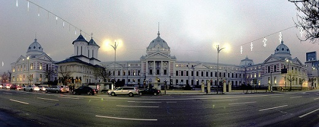

Obiective Culturale București
București
București este capitala României. Este cel mai populat oraș și cel mai important centru industrial și comercial al țării. Populația de 1.883.425 de locuitori (2011) face ca Bucureștiul să fie al zecelea oraș ca populație din Uniunea Europeană. Conform unor estimări ale unor specialiști, Bucureștiul adună zilnic peste trei milioane de oameni, iar în următorii cinci ani, acest număr va depăși patru milioane. La acestea se adaugă faptul că localitățile din preajma orașului, care vor face parte din viitoarea Zonă Metropolitană, însumează o populație de aproximativ 430.000 de locuitori.
Prima mențiune a localității apare în 1459. În 1862 devine capitala Principatelor Unite. De atunci a suferit schimbări continue, devenind centrul scenei artistice, culturale și mass-media românești. Arhitectura elegantă și atmosfera sa urbană i-au adus în Belle Époque supranumele de „Micul Paris”. Deși clădirile și cartierele din centrul istoric au fost deteriorate sau distruse de război, cutremure și chiar programul lui Nicolae Ceaușescu de sistematizare, multe au supraviețuit. În ultimii ani, orașul a cunoscut un boom economic și cultural.
Istoric
Legenda spune că Bucureștiul a fost fondat de un oier pe nume Bucur. Conform altei variante mai probabile, București a fost întemeiat de către Mircea cel Bătrân la sfârșitul secolului al XIV-lea. Pe malurile Dâmboviței și ale Colentinei este atestată cultura paleolitică și neolitică. Până în 1800 î. Hr. apar anumite dovezi ale unor comunități în zonele Dudești, Lacul Tei și Bucureștii Noi de astăzi. Săpăturile arheologice arată trecerea acestei zone printr-un proces de dezvoltare din epoca bronzului și până în anul 100 î. Hr., în timpul căruia zonele Herăstrău, Radu Vodă, Lacul Tei, Pantelimon, Dealul Mihai Vodă, Popești-Leordeni și Popești-Novaci sunt populate de indo-europeni (mai precis geto-daci). Primele locuințe după retragerea aureliană din 273 d. Hr. sunt atestate în secolele III–XIII, până în Evul Mediu.
Așezarea este atestată documentar la 21 septembrie 1459 într-un act emis de Vlad Țepeș, domn al Țării Românești, prin care se întărește o moșie unor boieri. Cetatea Dâmboviței, cum mai apare în primii ani orașul, avea rol strategic, urmând să supravegheze drumul ce mergea de la Târgșor la Giurgiu, în ultima așezare aflându-se o garnizoană otomană. În scurt timp, Bucureștiul se afirmă, fiind ales la 14 octombrie 1465 de către Radu cel Frumos ca reședință domnească. În anii 1558–1559, la Curtea Veche este construită Biserica Domnească, ctitorie a domnului Mircea Ciobanul, aceasta rămânând până astăzi cel mai vechi lăcaș de cult din oraș păstrat în forma sa inițială.
În 1659, sub domnia lui Gheorghe Ghica, Bucureștiul devine capitala Țării Românești, din ordin turcesc, pentru a avea o capitală în zona de câmpie și aproape de Dunăre, mai ușor de controlat în comparație cu Târgoviște. Din acel moment se și trece la modernizarea acestuia. Apar primele drumuri pavate cu piatră de râu (1661), se înființează prima instituție de învățământ superior, Academia Domnească (1694) și este construit Palatul Mogoșoaia (Constantin Brâncoveanu, 1702), edificiu în care astăzi se află Muzeul de Artă Feudală Brâncovenească. În 1704 ia ființă, la inițiativa spătarului Mihai Cantacuzino, Spitalul Colțea, care a fost avariat ulterior într-un incendiu și un cutremur și reconstruit în 1888. În scurt timp, Bucureștiul se dezvoltă din punct de vedere economic; se remarcă creșterea numărului meșteșugarilor, ce formau mai multe bresle (ale croitorilor, cizmarilor, cavafilor, cojocarilor, pânzarilor, șalvaragiilor, zăbunarilor ș.a). Odată cu acestea continuă modernizarea orașului. Sunt create primele manufacturi și cișmele publice, iar populația se mărește continuu prin aducerea de locuitori din întreaga Muntenie (catagrafiatul din 1798 indica 30.030 de locuitori, în timp ce cel din 1831 număra 10.000 de case și 60.587 de locuitori). Încet-încet apar o serie de instituții de interes (Teatrul Național, Grădina Cișmigiu, Cimitirul Șerban Vodă, Societatea Academică, Societatea Filarmonică, Universitatea din București, Gara de Nord, Grand Hôtel du Boulevard, ziarul Universul, cafenele, restaurante, Grădina Botanică, Ateneul Român, Banca Națională, cinematografe) și inovații în materie de tehnologie și cultură (iluminatul cu petrol lampant, prima linie de tramvai, iluminatul electric, primele linii telefonice).
Municipiul București a fost până la instaurarea regimului comunist în România reședința județului Ilfov. În aceea perioadă era denumit „micul Paris” datorită asemănării cu capitala franceză, dar și-a pierdut farmecul în perioada comunismului. În ultimul timp dezvoltarea imobiliară a stârnit îngrijorare cu privire la soarta clădirilor de interes istoric din oraș, în special a acelora din centrul istoric.